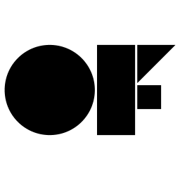

Who Am I Where Am I Going
What is Interaction Design?
Explained for orther designers and for none designers
For Non Designers
Think about your favourite device, maybe your phone or a videogame console. Now how easy and intuitive is it to use it? Well an interaction designer (more accurately a group of interaction designers) made it that way.
Interaction designers use some behavioural and cognitive psychology and apply it to design to make things easier and more intuitive to use.
An interaction designer would be better described as a jack of all trades in design as he needs to know about many fields within design like information architecture and and visual design but with a big emphasis on the human factor.
For Designers
An interaction designer is in charge of marrying the human factor (behavioural and cognitive psychology) with the design process.
He has to be extremely aware of how a person reacts to the product or service he is researching or developing and applying that throughout the design process.
To summarise, an interaction designer is extremely focused on satisfying the needs and desires of the consumer of the product or service they are working on.
To Learn - To Achieve
- Degree
- Completing a degree in the field is a good starting point. However there are ways around it if not able to atten a university or aquire a degree in another way
- Portfolio
- A good portfolio showcasing a designers ability and work is a must in todays ondustry
- Reference
- A reference from a previous intership and or work can be a huge boost when approaching a new job
- Time management skills
- A interaction designer has a lot of tight deadlines and may be working in more than one project at a time. Therefore a interaction designer needs to be able to allocate his or hers time adequitly to meet said deadlines
- Communication skills
- A interaction designers has to be able to communicate his or hers ideas at a fast pace. There for he or she has to have good communication skills, wether that be verbal or written.
- Collaboration skills
- Collaboration is already a big part of the work inviroment for most roles. This is even more the case for interaction designers. Interaction designers are constantly having to work with different departments and different people, therefore it is crucial that they are good a collaboration
- Rapid prototyping
- Interaction designers are constantly receiving feedback, they have to test this feed back in a quick and efficient manner. So rapid prototyping skills are a crucial skill for interaction designers
What is 'Proffesional'

A couple of the things I mention here is echoing what i already mentioned in the 'what i need to learn' section but I'll list them here again just to be explicity
These are the attributes I believe a professional designer should have:
- Excellent time management skills
- A very clear and concise manner of communication, weather that may be written or verbal
- A professional designer doesn’t necessarily have to be able to draw, but he does however need to be able to communicate ideas visually in some way
- A professional designer needs to be able to collaborate well with all types of individual and be able to get clear and concise information from others
- He or she must be detailed oriented kind of person
- He or she must be an excellent problem solver
- He or she must be able to think both ‘widely’ and ‘narrowly’ (what i mean by this is that they must be able to think outside the box but also be able to have a singular focus)
- He or she needs to be aware of his environment and other people around him
- A huge plus if he can take criticism so people don’t have to tiptoe around them
- He or she must get on with a task when it’s given to him and meet deadlines
Intellectual Property
What is Intellectual property
Intellectual property (IP) refers to creations of the mind, such as inventions; literary and artistic works; designs; and symbols, names and images used in commerce.
IP is protected in law by, for example, patents, copyright and trademarks, which enable people to earn recognition or financial benefit from what they invent or create.
By striking the right balance between the interests of innovators and the wider public interest, the IP system aims to foster an environment in which creativity and innovation can flourish. [i]
My thoughts on intellectual property
I understand that copyrighting, trademarking and or paterning a piece of work can be quite important, specially when it's the source of your income.
However I think people need to be more aware of 'copyleft' (open source being an example of that) as an option.
There is a proven track record for open source working comercially and a in quite a few places it's been the reason of the company's success.
This is also a great way of growing the community of wichever field it's being applyed to.
People, Componies and Projects of Note


Bibliography
- Camelot group picture www.camelotgroup.co.uk/
- Creative Technologists logo www.rpct.io
- Ravensbourne picture www.ravensbourne.ac.uk
- Pictures of Fabrica center www.fabrica.it
- Pictues on the 'PEOPLE, COMPONIES AND PROJECTS OF NOTE' section are from there respective social media acounts
- Hellicar & Lewis quote
- Fabrica quote
- All pictures not explicitely credited here are all under Creative Commons Zero licence
- What is intelectual property quote